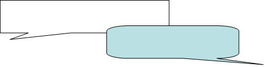
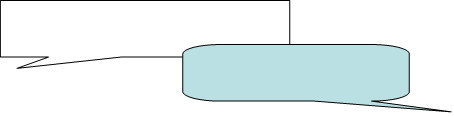

#1 - A PERIOD
Separate the run-on into two simple sentences with a period.
I love powerpoint presentations. They are so awesome.
Separate the run-on into two simple sentences with a period.
I love powerpoint presentations. They are so awesome.
 

Didn’t
we already do that?
Shut up and listen!